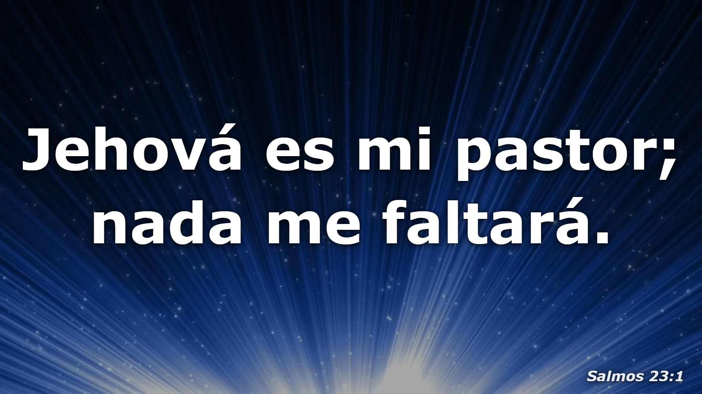
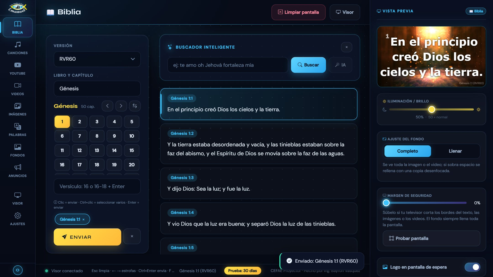
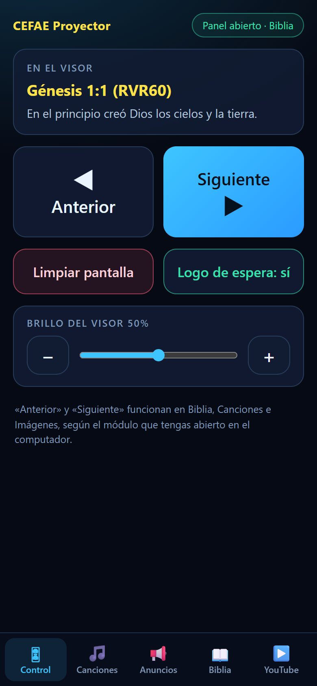

Biblia, canciones con su letra, videos, imágenes y anuncios en tu televisor o videobeam. Y lo controlas desde el celular, sin salir de tu lugar.


Un panel claro para el equipo de multimedia, y una pantalla limpia para la congregación.
Cambia de la Biblia a una canción, un video o un anuncio sin abrir otros programas. Lo que ves en la vista previa es lo que aparece en la pantalla.

Escanea un código QR y listo: avanza versículos y estrofas, pon una canción, un anuncio o un video de YouTube desde donde estés en el templo.
Dos versiones incluidas (RVR60 y NTV). Busca por libro y capítulo, o escribe una frase y la encuentra.
70 canciones incluidas. Agrega las tuyas, busca letras en internet y proyéctalas estrofa por estrofa.
Busca una canción por su nombre y la letra se proyecta sola, al ritmo de la música. Si no existe, la IA la sincroniza.
Sube tus videos y carteles, o pega un enlace de YouTube, y proyéctalos a pantalla completa.
Más de 20 videos de fondo en movimiento y colores, listos para usar detrás del texto.
Avisos que se muestran sobre cualquier pantalla, con tu estilo.
Televisores, videobeams y pantallas LED de cualquier forma. Con dos pantallas, el visor sale directo en la otra.
Pon tu logo y el nombre de tu iglesia. Tus datos quedan solo en tu equipo.
¿Quieres tu clave de licencia? Escríbenos: WhatsApp +57 322 592 6739
CEFAE Proyector lo desarrolla y lo atiende directamente su autor. Hecho por Ing. Bayron Vásquez. Si tienes una duda antes de comprar o algo no te funciona, escribes y te responde una persona.
El programa te pide la clave de licencia para seguir. Todo lo que ya tenías (canciones, anuncios, logo y ajustes) se queda donde está.
Después de tu pago te enviamos tu clave. La pegas en «Ajustes» y el programa queda activado, sin necesidad de internet.
No. La Biblia, las canciones y los fondos funcionan sin internet. Solo lo necesitan YouTube con letra, la búsqueda de letras y la sincronización con IA.
Sí. Escaneas un código QR con el teléfono (en la misma red Wi-Fi) y desde ahí cambias versículos, canciones y videos.
Es normal con programas nuevos. Pulsa «Más información» y luego «Ejecutar de todos modos». El instalador es el original de este sitio y puedes comprobarlo con la huella SHA-256 que aparece abajo.
Para verificar que el archivo no se dañó, su huella SHA-256 es:C9F40F3C7B2668F6667FAB90A23938D8DD736850650CE8EF082CE8F8A32A39E3